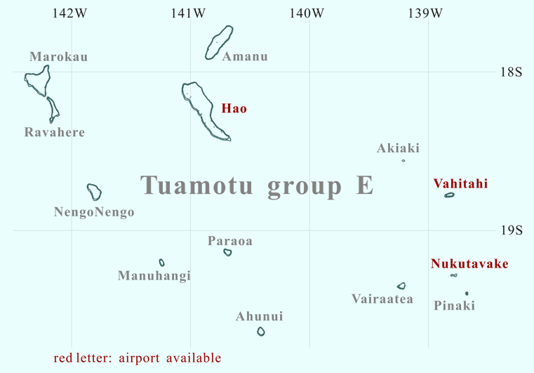

FS9 / FSX Addon Scenery French Polynesia
Tuamotu Archipelago Group E

Click the desired island
The shape of Marokau is roughly triangular (20km in length). The atoll is located less than 2 km north of Ravahere. The reef spread out on the southwest side of the atoll is almost submerged. On the north side and southeast side of the atoll, though the upheaved reef is narrow, the land area is formed. There seems to be a narrow passage where the lagoon is connected with the open sea at the southwest of the atoll. It is uncertain whether there is enough depth that the ship can enter the lagoon through these passes.
Marokau / Ravahere
Ravahere is a small, boomerang-shaped atoll, located nearby in the south of Marokau. There is no passage connecting the lagoon into the open ocean. The shallow lagoon is divided into two basins. The smaller and shallower basin is found in the south of the lagoon. It is separated from the main body of lagoon by the submarine ridge extended from the west of the atoll.
Amanu is located in 52 km to the northeast of Hao. The shape of the atoll is a slender oval, with northeast to southwest orientated. The maximum length of the lagoon is 23km, while the width is 5km in maximum. On the west side are two passages linking the lagoon to the open ocean. Though Amanu is a comparatively large atoll in the southeast region of the Tuamotu Archipelago, there is not an airfield.
Hao is a large atoll in the central part of the Tuamotu Archipelago.
Because of its shape, French explorer Bougainville named it Harp Island.
The shape of the atoll might certainly be seen the harp-shaped from the shipboard.
How do you image the shape from the sky?
The lagoon is one of the longest (55km from northwest to southeast) in French Polynesia.
However, Hao has only one navigable passage, named Kaki, on the north end of the atoll.
Because of geographical features the tidal current of the passage is very fast.
NengoNengo is located in approximately 100km southwest of Hao.
The atoll completely encloses the lagoon except a passage connecting with the open sea.
The pass is located in the north side of the atoll.
In my impression, the plant of this atoll seems to be a little.
The greater part of the land seems to be covered with sand.
There is a private airfield on the southeast of this atoll.
Manuhangi, a small oval-shaped atoll,
is located approximately 100 km to the south-southwest of Hao.
The atoll encloses almost the lagoon.
Though there is a narrow passage on the south of the atoll,
its depth is considerably shallow.
Therefore, the quantity of seawater by the tide is not clear.
As a result, the concentration of salt of its waters seems to be a high level.
Paraoa, a small roughly heart-shaped atoll,
is located 75 km to the south of Hao.
The information can hardly be obtained about Paraoa.
I inferred about this atoll based on the scenery that I designed.
The atoll that consists of an single island encloses a shallow lagoon.
There is no passage connecting the lagoon with the open ocean.
Therefore, usually the lagoon has no channel linking it with the open sea;
only when the tide level is high,
the water from the open sea reaches the lagoon via a few narrow passes.
As a result, its waters are a high concentration of salt.
Ahunui is located in southernmost of the Tuamotu Scenery that I designed.
A small roughly circular-shaped atoll is located 56 km to the south-southeast of Paraoa.
The atoll encloses the lagoon except two passages connecting with the open sea.
The both of passages are located in the south of the atolls.
Nukutavake is an atoll located in the eastern part of the Tuamotu Archipelago. It is over 1000 km from Tahiti island. This is a unique atoll because although it is flat and of coral formation, it has no lagoon. It is not understood whether the lagoon existed in the past. Part of the atoll is covered by dense vegetation, while the rest has a coconut tree plantation covering some 800 ha. There is an aerodrome 2625 ft south of the village, linking the atoll to the outside world.
Vairaatea is a small atoll located in 40km west-southwest of Nukutavake.
There are reef submerged on south side and northwest side of the atoll.
However, the passage from which the ship can go in and out seems not exist.
The remainder part of the atoll is the land area covered with the plant.
Pinaki, located in 15km southeast of Nukutavake,
is one of the smallest of the Tuamotu atolls.
The atoll that consists of an single island
encloses a lagoon except a single narrow spillway.
The inner lagoon is extremely shallow.
In the distant future,
this atoll might become an island with no lagoon, just like Nukutavake.